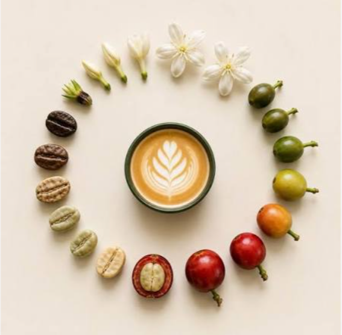

BREW/LAB · STRATEGY INTELLIGENCE V5
Strategy
to Scale.
A simulation-led study of how operating choices become a scalable business model.
15 simulations · 3 stages of growth · 14 strategic experiments
What creates profitable growth in a coffee business?
Explore the evidence ↓Workbook-backed · no invented metrics
01 · L1Local ShopFind product–market fit
→
02 · L2Build the BrandStrengthen the operating model
→
03 · L3Go InternationalScale across markets
01 · PERFORMANCEGrowth changed the scale.
Growth changed the scale.
Execution changed the outcome.
Compare like with like first. Target multiples expose execution quality without allowing Level 3's much larger dollar scale to visually erase Levels 1 and 2.
RUN LANDSCAPE
Execution quality by run
Hover · click to inspect
OPERATING MOMENTUM
How profit evolved inside the run
Scale without the visual distortion
02 · DECISION LABWhat actually
What actually
moved profit?
Each experiment isolates a strategic choice. Select a decision to see its measured effect, the evidence quality and the management implication.
PROFIT EFFECT

03 · VALUE CHAIN
From bean to business model.
The cup is only the visible end of the system. The simulation shows the same principle economically: sourcing, roasting, people, price, location and expansion interact. A capability creates value only when the market and operating model can support it.
SOURCE → ROAST → BRAND → PRICE → SERVE → SCALE
04 · STRATEGY PLAYBOOKSeven rules.
Seven rules.
One coherent system.
Not generic advice: each rule is linked to experiment evidence in the supplied workbook.
Reported values stay reported.
Calculated metrics stay labelled.
Average game total = arithmetic mean of workbook-reported Game total ($).
Target achievement = count(Game total ≥ Target) ÷ runs shown.
Target multiple = Game total ÷ Target. Used for fair cross-level execution comparison.
L3 trajectory = Mature + Emerging operating profit by year; never used to reconstruct the reported overall L3 game total.